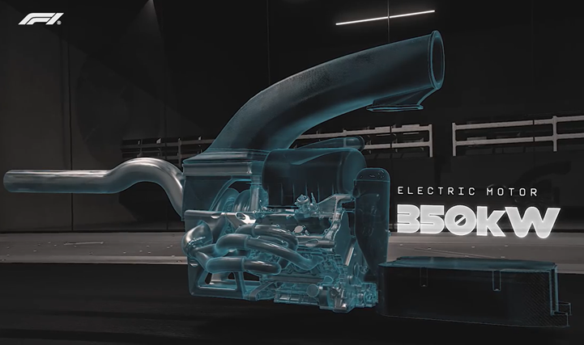
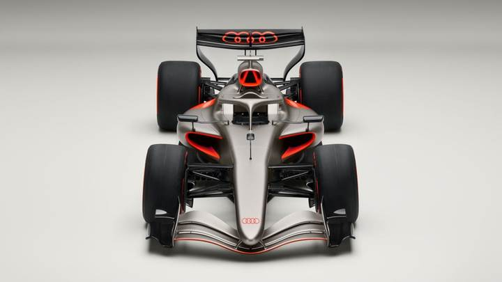
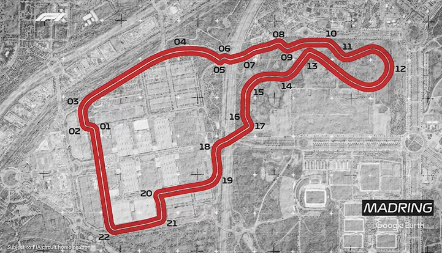

2026 será un año histórico para la Fórmula 1. La categoría reina presenta nuevas reglas, nuevos equipos, un rediseño total de los autos y un circuito inédito. Las nuevas reglamentaciones modificarán la aerodinámica y el motor de los monoplazas para brindar mayor competitividad y espectáculo en pista.
🏎️ Aerodinámica Activa: Adiós al DRS
Los vehículos serán más ligeros y compactos, brindando más agilidad en las curvas. Uno de los cambios más radicales es la desaparición del DRS tal como lo conocemos. En su lugar, entra la aerodinámica activa: alerones delanteros y traseros móviles que se ajustarán en tiempo real para reducir la resistencia (drag) en rectas y aumentar la carga en curvas, garantizando máxima eficiencia y velocidad.
⚡ El Nuevo Corazón Híbrido


El motor evoluciona hacia la sostenibilidad. La nueva unidad de potencia gestionará una división de energía casi perfecta: 50% combustión interna y 50% eléctrica.
Dato Clave
El combustible provendrá en un 99% de fuentes renovables, posicionando a la F1 como líder en tecnología híbrida y sustentable sin sacrificar la potencia.
🇺🇸 Cadillac: El Regreso de Checo y Valtteri
Checo Pérez y Valtteri Bottas regresan a la parrilla como la dupla oficial del nuevo equipo Cadillac. Es la primera vez que la marca estadounidense da el paso a la F1, y sus ambiciones son enormes.
Con Graeme Lowdon como director de equipo, Cadillac apuesta por la experiencia. Suman más de 500 Grandes Premios combinados entre el mexicano y el finlandés, una base sólida para ganar el respeto de la parrilla y desarrollar el monoplaza desde cero.

🇩🇪 Audi debuta en la F1

La marca alemana toma el mando al 100% del equipo Sauber, convirtiéndose en un equipo de fábrica. Audi fabricará todos los componentes clave: desde piezas y tren motriz hasta la caja de velocidades.
Con más de 100 años de historia y títulos en Le Mans, WRC y Dakar, Audi está listo para su mayor desafío. Jonathan Wheatley lidera el proyecto, con Nico Hülkenberg y Gabriel Bortoleto como los pilotos encargados de llevar los cuatro aros al podio.
🇪🇸 Madrid se une al calendario
Finalmente, Madrid se une al tour mundial de la F1 con un nuevo circuito semi-urbano. Los equipos tendrán que dominar esta nueva pista que promete emoción en cada curva cuando las luces de salida se enciendan en este 2026.
